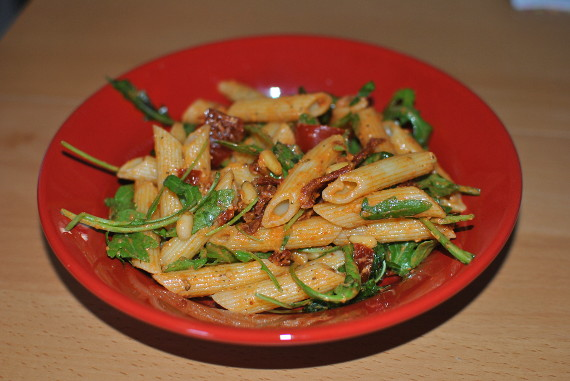

Italienischer Nudelsalat mit Pesto

- Zubereitung: ca. 15 Minuten
- Für 6 Personen
Zutaten
- 1 Glas Pesto Rosso
- 1 Glas getrocknete Tomaten in Öl
- 1 Bund Rucola
- 50 g Pinienkerne
- 500 g Penne
- 250 g Cocktailtomaten
- 1 Pck. italienische Kräuter
- einige Stiele Basilikum
Zubereitung
- Die Nudeln im Salzwasser al dente kochen und abkühlen lassen. Die getrockneten Tomaten in Stücke schneiden, die Pinienkerne in einer trockenen Pfanne ohne Fett anrösten.
- Rucola und Basilikum waschen und etwas zerrupfen. Alle Zutaten miteinander mischen und mindestens 1 Stunde ziehen lassen.
(Quelle: http://www.chefkoch.de)